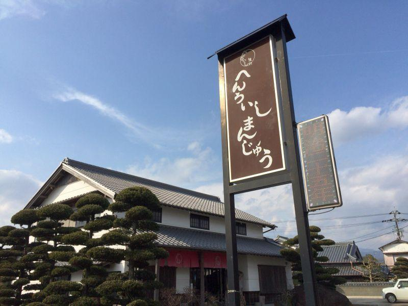
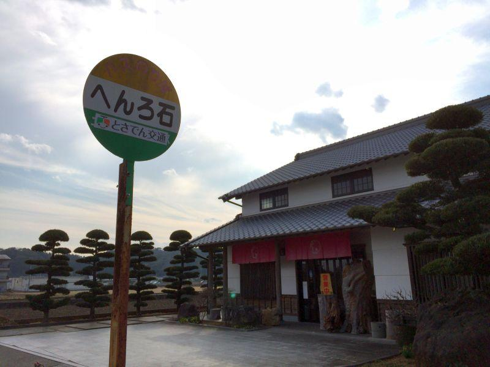
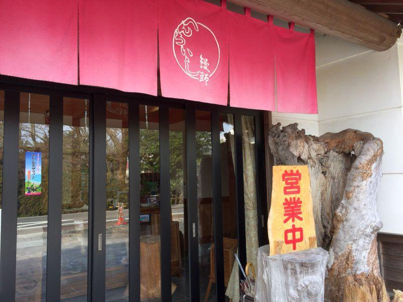
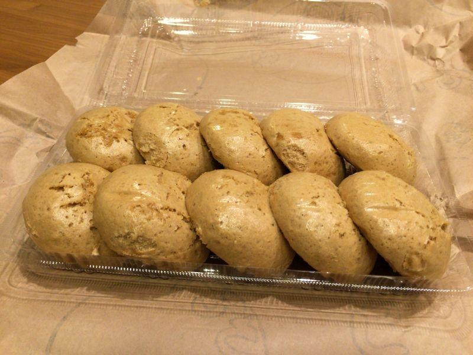
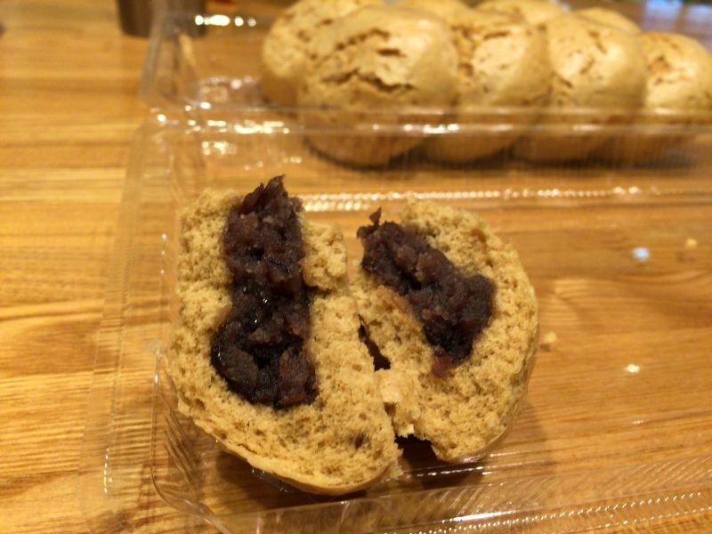
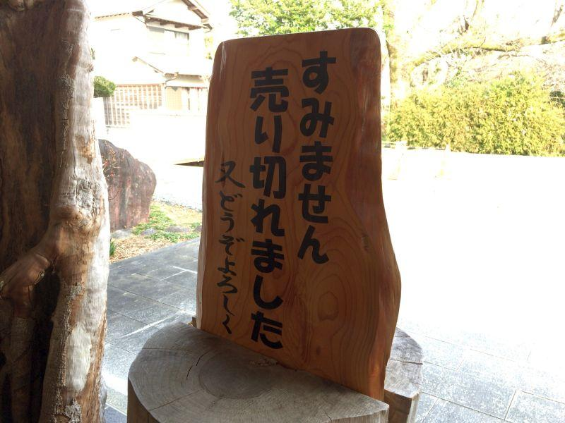
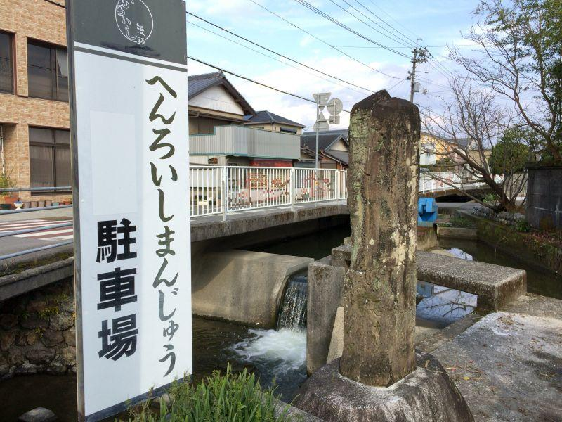
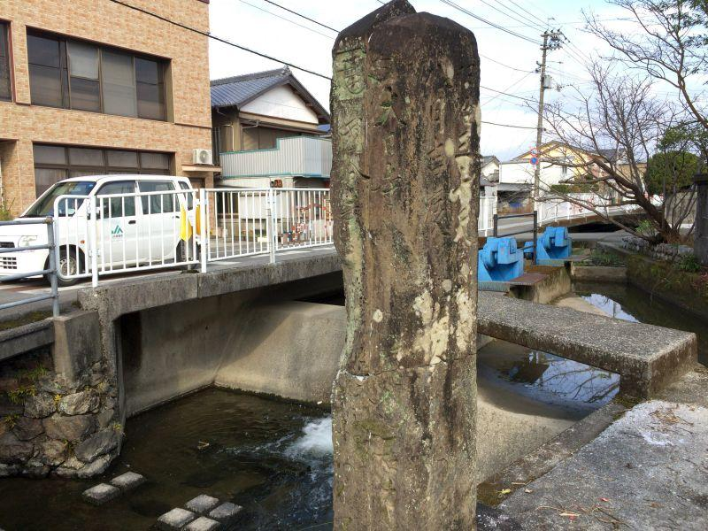

素朴な味わいのおまんじゅうは、地元・お遍路さん、共に人気 < へんろいしまんじゅう / 高知県南国市 >

南国土佐。
四国八十八ヶ所を回るお遍路さんが通る遍路道沿いに、地元で根強い人気のグルメがあります。
「へんろいし饅頭」
明治25年(1892)創業の老舗饅頭店です。
へんろ石って...？

お店のすぐ前にある、バス停の名前は "へんろ石"
へんろ石＝遍路石
とは、四国八十八ヶ所を回るお遍路さんが、方向や距離を知る手掛かりになる、標石(しるべいし)の事。
北隣にあった以前の店舗の向かいに 今も存在する、明治時代の古い標石が店名の由来になったと思われます。それについては後程。
へんろいし饅頭をお求めの際は、お早目の来店を...

店先にある "営業中" の文字が掲げられていたらご安心ください。
地元でも根強い人気がある饅頭ゆえ、法要などで大量の注文が入った時は、早い時間に売り切れになることがよくあります。なるべく早い時間に来店しましょう。
とても素朴な味わい。へんろいし饅頭

メニューは "へんろいしまんじゅう" のみ。
5個入り... 380yen
10個入り... 760yen
この他、店頭で1個から購入することができます。
歩き遍路さんからすると、荷物を増やすことは得策では無いので、バラ売りは嬉しいサービスです。

ほんのり茶色がかった皮は、黒糖のものでしょうか？ あんこは粒餡(つぶあん)。とても素朴な味わいです。
蒸しパンが好きな方には、特にオススメ！

店先の 「営業中」 の看板の裏側は、この通り。
今まで昼下がり(午後)に来て こちらの面を見たことが、何度もあります。
今は高知市内？南国市内？のローソンで、へんろいしまんじゅうを購入することができるそうです。
店に居る時にコンビニ配送用のトラックが来て、コンテナにセットされた へんろいしまんじゅうを積んで出て行きました。実際に自分が見たものではありませんが、その時に店主さんが そのように仰っていました。
店名の由来になった "へんろいし"

店名の由来になった標石(＝へんろいし)。
"遍路の鉄人"
と称され、これまで四国遍路を歩いて279周と86ヶ寺回った、中務茂兵衛(なかつかさもへえ)さんによって建立されたものが、現店舗の北隣、旧店舗の道路を挟んだ向かい側に残されています。

正面(西)...
大日寺
國分寺
●●●
右面(南)...
明治三十天 八月吉辰
世話人●●●
左面(北)...
壱百五十七度目為供養建
周防國大嶋郡椋野村
施主 中務茂兵衛義教
裏面(東)...
無し
(●●●... 不明)
慶応2年(1866)
茂兵衛22歳の時、初めての四国遍路
明治19年(1886)
茂兵衛42歳、八十八回目の巡拝を記念して、初めての標石建立
明治30年(1898)
茂兵衛53歳、157回目にこの地に標石を建立
大正10年(1921)
茂兵衛77歳、279回目の巡拝を記念して、標石を建立(最後の標石)
大正11年(1922)
茂兵衛78歳、279回と86ヶ寺を回ったところで死去
(※ 年齢は数え年)
へんろいし饅頭さんの開業は 明治25年(1893)なので、標石に刻まれている情報を解読すると、実は茂兵衛さんの "へんろいし" の方が後であることがわかります。
元祖山崎 へんろいしまんじゅう
< 自家用車 >
高松駅から 約1時間40分、121km
高知龍馬空港から 約15分、9.1km
< 公共交通機関 >
JR土讃線 後免駅 下車 徒歩約20分、1.4km
※ 主な地点からの最速・最短距離